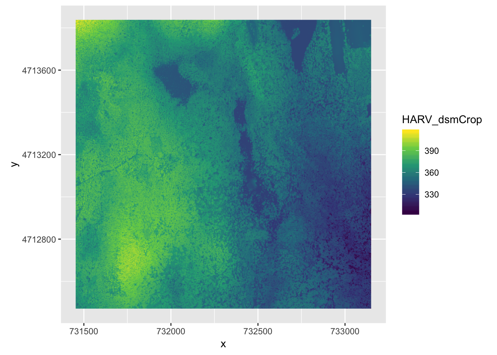
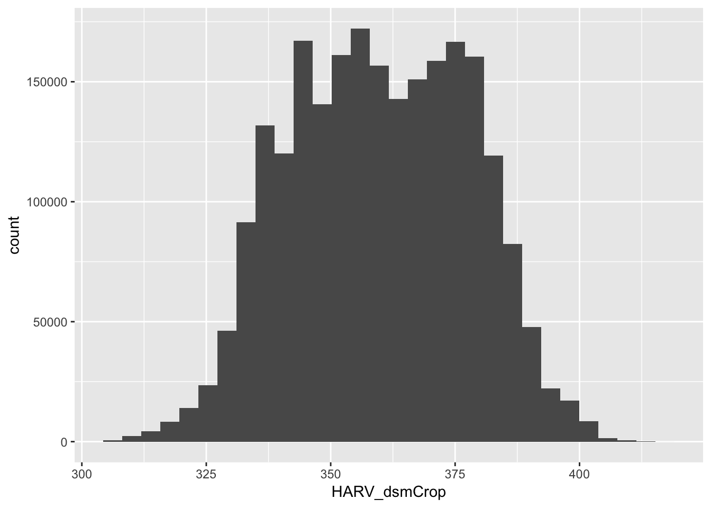
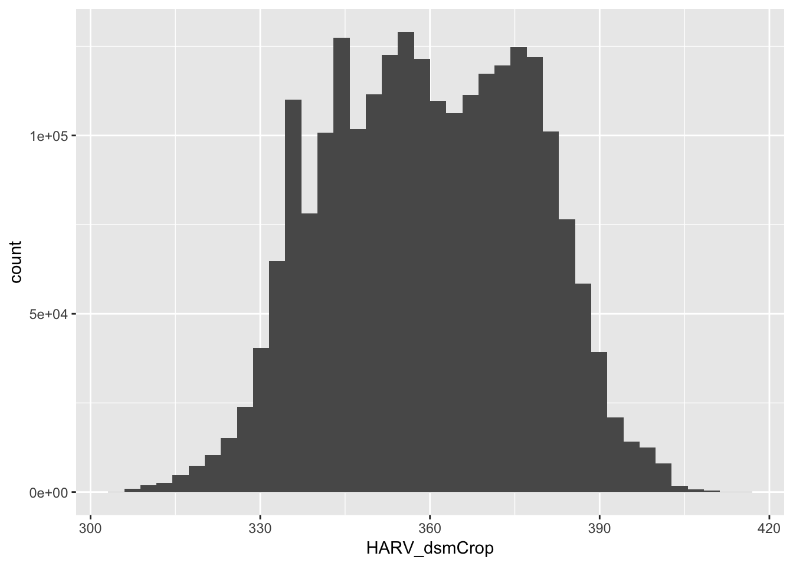

Questions: What is a raster dataset? How do I work with and plot raster data in R? How can I handle missing or bad data values for a raster?
Objectives: Describe the fundamental attributes of a raster dataset. Explore raster attributes and metadata using R. Import rasters into R using the raster package. Plot a raster file in R using the ggplot2 package. Describe the difference between single- and multi-band rasters.
installing the raster and rgdal packages: install.packages(“raster”). Note that for raster package you might need to install sp package using install.packages(“sp”) as wel ass install.packages(“rgdal”)
library(sp)
library(raster)
library(rgdal)## rgdal: version: 1.4-4, (SVN revision 833)
## Geospatial Data Abstraction Library extensions to R successfully loaded
## Loaded GDAL runtime: GDAL 2.1.3, released 2017/20/01
## Path to GDAL shared files: /Library/Frameworks/R.framework/Versions/3.6/Resources/library/rgdal/gdal
## GDAL binary built with GEOS: FALSE
## Loaded PROJ.4 runtime: Rel. 4.9.3, 15 August 2016, [PJ_VERSION: 493]
## Path to PROJ.4 shared files: /Library/Frameworks/R.framework/Versions/3.6/Resources/library/rgdal/proj
## Linking to sp version: 1.3-1library(tidyverse)## Registered S3 methods overwritten by 'ggplot2':
## method from
## [.quosures rlang
## c.quosures rlang
## print.quosures rlang## ── Attaching packages ─────────────────────────────────────── tidyverse 1.2.1 ──## ✔ ggplot2 3.1.1 ✔ purrr 0.3.2
## ✔ tibble 2.1.3 ✔ dplyr 0.8.1
## ✔ tidyr 0.8.3 ✔ stringr 1.4.0
## ✔ readr 1.3.1 ✔ forcats 0.4.0## ── Conflicts ────────────────────────────────────────── tidyverse_conflicts() ──
## ✖ tidyr::extract() masks raster::extract()
## ✖ dplyr::filter() masks stats::filter()
## ✖ dplyr::lag() masks stats::lag()
## ✖ dplyr::select() masks raster::select()First download the data using the link below: https://ndownloader.figshare.com/articles/2009586/versions/10
viewing the Raster file attributes
GDALinfo("data/NEON-DS-Airborne-Remote-Sensing/HARV/DSM/HARV_dsmCrop.tif")## rows 1367
## columns 1697
## bands 1
## lower left origin.x 731453
## lower left origin.y 4712471
## res.x 1
## res.y 1
## ysign -1
## oblique.x 0
## oblique.y 0
## driver GTiff
## projection +proj=utm +zone=18 +datum=WGS84 +units=m +no_defs
## file data/NEON-DS-Airborne-Remote-Sensing/HARV/DSM/HARV_dsmCrop.tif
## apparent band summary:
## GDType hasNoDataValue NoDataValue blockSize1 blockSize2
## 1 Float64 TRUE -9999 1 1697
## apparent band statistics:
## Bmin Bmax Bmean Bsd
## 1 305.07 416.07 359.8531 17.83169
## Metadata:
## AREA_OR_POINT=AreaStoring this information in R
HARV_dsmCrop_info <- capture.output(
GDALinfo("data/NEON-DS-Airborne-Remote-Sensing/HARV/DSM/HARV_dsmCrop.tif")
)Open a Raster in R
DSM_HARV <-
raster("data/NEON-DS-Airborne-Remote-Sensing/HARV/DSM/HARV_dsmCrop.tif")
DSM_HARV## class : RasterLayer
## dimensions : 1367, 1697, 2319799 (nrow, ncol, ncell)
## resolution : 1, 1 (x, y)
## extent : 731453, 733150, 4712471, 4713838 (xmin, xmax, ymin, ymax)
## crs : +proj=utm +zone=18 +datum=WGS84 +units=m +no_defs +ellps=WGS84 +towgs84=0,0,0
## source : /Users/darya/Dropbox (Sydney Uni)/Training/19_09_11_ResBaz/19_01_11_ResBazGIS/data/NEON-DS-Airborne-Remote-Sensing/HARV/DSM/HARV_dsmCrop.tif
## names : HARV_dsmCrop
## values : 305.07, 416.07 (min, max)summary(DSM_HARV)## Warning in .local(object, ...): summary is an estimate based on a sample of 1e+05 cells (4.31% of all cells)## HARV_dsmCrop
## Min. 305.11
## 1st Qu. 345.51
## Median 359.56
## 3rd Qu. 374.25
## Max. 416.07
## NA's 0.00summary(DSM_HARV, maxsamp = ncell(DSM_HARV))## HARV_dsmCrop
## Min. 305.07
## 1st Qu. 345.59
## Median 359.67
## 3rd Qu. 374.28
## Max. 416.07
## NA's 0.00convert it to a dataframe in order to plot it using ggplot2
DSM_HARV_df <- as.data.frame(DSM_HARV, xy = TRUE)can see a standard dataframe format
str(DSM_HARV_df)## 'data.frame': 2319799 obs. of 3 variables:
## $ x : num 731454 731454 731456 731456 731458 ...
## $ y : num 4713838 4713838 4713838 4713838 4713838 ...
## $ HARV_dsmCrop: num 409 408 407 407 409 ...Note: in case ggplot is not installed install.packages(“ggplot2”) or install.packages(“ggplot2”, dependencies = TRUE), then check the packages to make sure it is ticked
ggplot() +
geom_raster(data = DSM_HARV_df , aes(x = x, y = y, fill = HARV_dsmCrop)) + scale_fill_viridis_c() +
coord_quickmap()
View Raster Coordinate Reference System (CRS) in R: We can view the CRS string associated with our R object using thecrs() function.
crs(DSM_HARV)## CRS arguments:
## +proj=utm +zone=18 +datum=WGS84 +units=m +no_defs +ellps=WGS84
## +towgs84=0,0,0Challenge: What units are our data in?
Understanding CRS in Proj4 Format: proj=utm: the projection is UTM, UTM has several zones. zone=18: the zone is 18 datum=WGS84: the datum is WGS84 (the datum refers to the 0,0 reference for the coordinate system used in the projection) units=m: the units for the coordinates are in meters ellps=WGS84: the ellipsoid (how the earth’s roundness is calculated) for the data is WGS84
Calculate Raster Min and Max Values
minValue(DSM_HARV)## [1] 305.07maxValue(DSM_HARV)## [1] 416.07Set min and max values:
DSM_HARV <- setMinMax(DSM_HARV)We can use the raster() function to import one single band from a single or multi-band raster. We can view the number of bands in a raster using the nlayers() function.
nlayers(DSM_HARV)## [1] 1To highlight NA values in ggplot, alter the scale_fill_*() layer to contain a colour instruction for NA values, like scale_fill_viridis_c(na.value = ‘deeppink’)
GDALinfo("data/NEON-DS-Airborne-Remote-Sensing/HARV/DSM/HARV_dsmCrop.tif")## rows 1367
## columns 1697
## bands 1
## lower left origin.x 731453
## lower left origin.y 4712471
## res.x 1
## res.y 1
## ysign -1
## oblique.x 0
## oblique.y 0
## driver GTiff
## projection +proj=utm +zone=18 +datum=WGS84 +units=m +no_defs
## file data/NEON-DS-Airborne-Remote-Sensing/HARV/DSM/HARV_dsmCrop.tif
## apparent band summary:
## GDType hasNoDataValue NoDataValue blockSize1 blockSize2
## 1 Float64 TRUE -9999 1 1697
## apparent band statistics:
## Bmin Bmax Bmean Bsd
## 1 305.07 416.07 359.8531 17.83169
## Metadata:
## AREA_OR_POINT=AreaBad Data Values in Rasters are different from NoDataValue(s)
Create A Histogram of Raster Values:
ggplot() +
geom_histogram(data = DSM_HARV_df, aes(HARV_dsmCrop))## `stat_bin()` using `bins = 30`. Pick better value with `binwidth`.
ggplot() +
geom_histogram(data = DSM_HARV_df, aes(HARV_dsmCrop), bins = 40)
Notes on raster structure